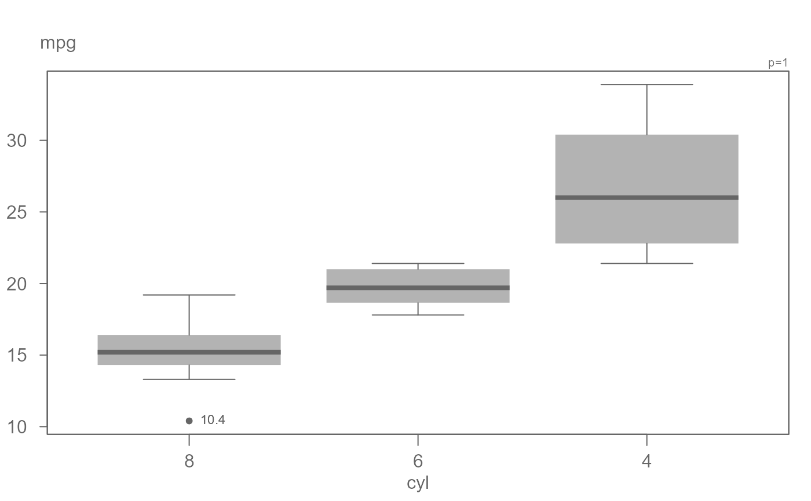
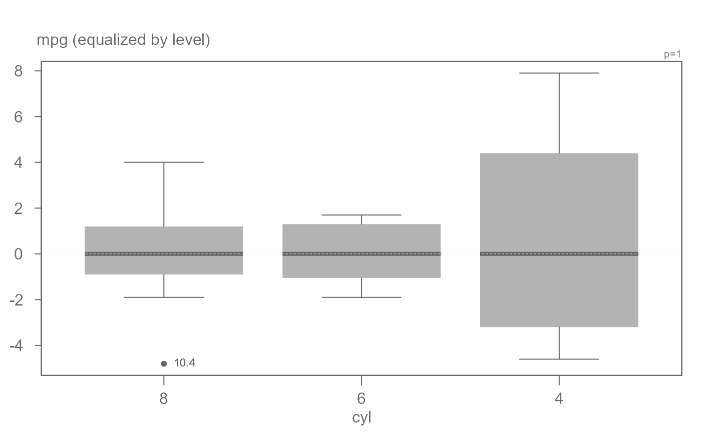
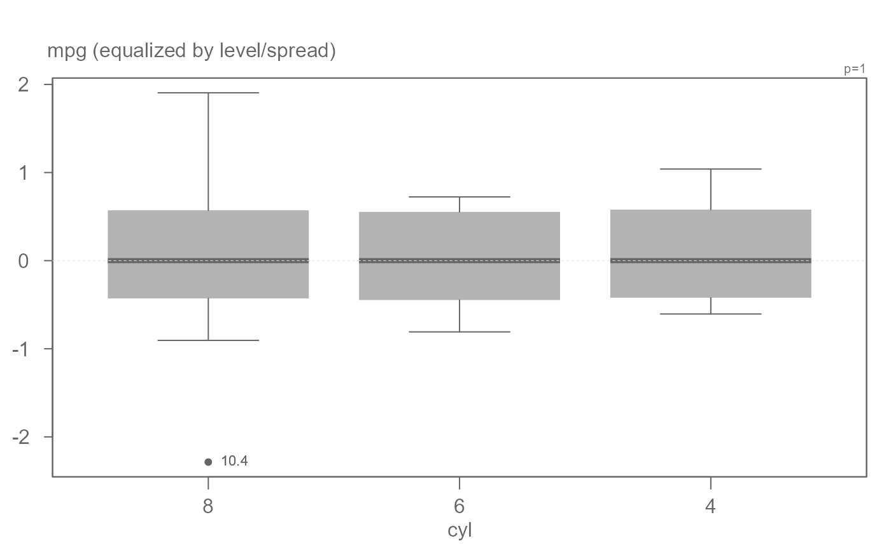

eda_boxls creates boxplots conditioned on one variable
while providing the option to spreads levels and/or levels.
Usage
eda_boxls(
dat,
x,
fac,
p = 1,
tukey = FALSE,
outlier = TRUE,
out.txt = NULL,
type = "none",
notch = FALSE,
horiz = FALSE,
outliers = TRUE,
grey = 0.6
)Arguments
- dat
Data frame
- x
Column name assigned to the values
- fac
Column name assigned to the factor the values are to be conditioned on
- p
Power transformation to apply to variable
- tukey
Boolean determining if a Tukey transformation should be adopted (FALSE adopts a Box-Cox transformation)
- outlier
Boolean indicating if outliers should be plotted
- out.txt
Column whose values are to be used to label outliers
- type
Plot type. "none" = no equalization ; "l" = equalize by level; "ls" = equalize by both level and spread
- notch
Boolean determining if notches should be added.
- horiz
plot horizontally (TRUE) or vertically (FALSE)
- outliers
plot outliers (TRUE) or not (FALSE)
- grey
Grey level to apply to plot elements (0 to 1 with 1 = black)
Value
No return value
#' @details
Note that the notch offers a 95 medians are equal assuming that the distribution of each batch is approximately normal. If the notches do not overlap, we can assuming that medians are significantly different at a 0.05 level. Note that the notches do not correct for multiple comparison issues and three or more batches are plotted.
Examples
# A basic boxplot (no equalization)
eda_boxls(mtcars,mpg, cyl, type="none", out.txt=mpg )
# Boxplots equalized by level
eda_boxls(mtcars,mpg, cyl, type="l", out.txt=mpg )

# Boxplots equalized by level and spread
eda_boxls(mtcars,mpg, cyl, type="ls", out.txt=mpg )

# Hide outlier
eda_boxls(mtcars,mpg, cyl, type="ls", out.txt=mpg , outlier=FALSE)

# For long factor level names, flip plot
eda_boxls(iris, Sepal.Length, Species, out.txt=Sepal.Length , horiz = TRUE)